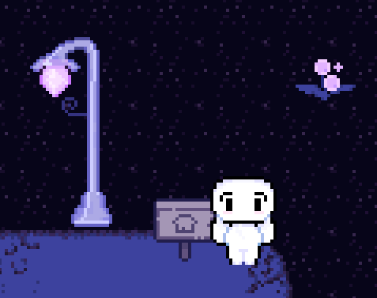

entry 005
june 29th, 2026 • some time after waking up
GOOD AFTERNOON!!!!!! or good morning. i dont know anymore. I DO ACTUALYY ITS AFTERNOON.
my sleep schedule has officially exploded. the last thing i remember was writing code at like 4 in the morning and then i woke up and it was almost 1pm. i have become entirely nocturnal (im kidding).
anyways!!!! i kept working on AVULSE today and i actually got a lot done. i finally got the warping block started, so now in a little-- after some instance code writing, Vino will be able to travel rooms..
finally. collisions is NO PROBLEM ANYMORE! i can finally set that aside and work on ONLY game building. so once i build more rooms-- ( i made item markers, such as npc spot marks, interactive item marks and such, smart right?)-- I can finally make the interactive puzzles!
and now... a screenshot!!!!! look!!!!! the game is becoming real!!!!!! ALSO YAY I LEARNED HOW TO ADD IMAGES! spicing things up i see???? also, devlog format? it's not what I wanted but it's working out for now-- if it ain't broken then don't touch it.

the current state of lumenveil district. haha you can barely see it!!!!! it's bigger i just need a bigger screenshot!
seeing this room on my screen again is weirdly emotional. after losing the original version of AVULSE, i was honestly worried i would never get this feeling back.
but now there is a room again. there is music again. there is a little vino guy walking around again,,,
that means i am officially making AVULSE again. FINALLY DAMN!
i still have a LOT to do, but i am really happy right now. I'm planning to add walls and stuff to the next few rooms because i need less flat world typa stuff, wheres the DEPTH HUH/?!?!?!?! GET TO WORK TONGE!!!
sleep schedule : working on it, ok? movement/collision status : finally completed and outta the damn way lumenveil : making more rooms today! mood : swag currently listening to : Kirby music to touch grass to - Coco jambo (yt)